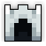
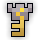

| Last updated: Exalt Version 5.12.0.0 (June 2025) |
|---|
 Teleportation Disabled Teleportation Disabled Music: Lost Halls Music: Lost Halls
|
| Dust Drops | ||
|---|---|---|
| 32-36 |
33-39 |
38-46 |
The Lost Halls is an endgame dungeon designed to be among the hardest content in the game. In addition to the main dungeon, there are 2 sub-areas: the Cultist Hideout and The Void, each with their own boss. Details about each sub-area can be found on their respective page. This page describes the main dungeon, which is one of the Exaltation dungeons, boosting Defense.
The Lost Halls complex is a source of numerous stat potions, top-tier gear, a large number of powerful Untiered items, the Lost Golem ST Set, and the only source of the Helmet Rune.
Portal to the Lost Halls drops at guaranteed rate from the Bloodroot Heart, Ravenous Rot and Lost Sentry.
This dungeon must be completed to earn ‘Travel of the Decade‘, ‘Conqueror of the Realm‘, ‘Hero of the Nexus’ and ‘Realm of the Mad God’ fame bonuses.
| The Realm Eye says: |
|---|

Oryx’s takeover of the realm resulted in many different efforts to reclaim the land. While fighters such as yourself attacked directly, researchers explored more scientific solutions. To safely conduct research inside the realm, an enormous network of experimentation rooms were built deep underground, spanning almost the entire realm. Highly unethical tests took place in the now abandoned halls. Documentation in this library is limited, but I believe written texts with greater detail exist somewhere in this world. |
 The Lost Halls Key is available in the Nexus for 200  .
.
See the Lost Halls Guide for a complete walk-through on the dungeon and all its enemies.
The Lost Halls is composed of a large 8x8, 8x9, 9x8, or 9x9 procedurally generated “grid” of square rooms with hallways connecting them. Enemies are found in these rooms, with each room containing one Group Leader commanding their respective group. The rooms tend to look similar, but can have randomly-generated gimmicks found in them. These gimmicks range from beneficial to dangerous, such as arrow/bomb traps, ice tiles, Corruption, Marble Eyes that provide AoE status effects, etc.
The dungeon is fairly big and the boss doesn’t have a Quest marker until found, making it hard to navigate.
There are several notable rooms that are different from the others.
The Starting Room is a square room containing 1-4 Pillars inside, facing a wall. In order to enter the main dungeon, players will have to stand close to these Pillars to drop their invulnerability and kill them, opening up the corresponding path in the wall. Each pillar has 15,000 base HP, 35 DEF, and HP Scaling.
Exactly five of the seven dead ends have a multitude of Treasure Pots that can drop bonus loot such as Tinctures, Effusions, and Stat Pots. A number of the Pots will spawn Evil Spirits, but one of them will have a passive pink flame that will teleport itself to the Treasure Room boss. These flames are essential for accessing the secret area of the dungeon. Additionally, after a Flame is found, it becomes visible on the minimap, thereby revealing the location of the Treasure Room.
One of the dead ends will be a Treasure Room. The Treasure Room is a large room identical to the ones normally found. It is completely empty except for the Treasure Room Boss, the Agonized Titan, in the middle and a locked portal to the Cultist Hideout. This room can only be entered from below.
The last dead end, just before the boss room, is a relatively empty room, containing only the Marble Defender. Once found, it will become each player’s Quest, making it easier to find for players that have split up. After being defeated, the wall behind it opens to the Boss Room.
The Boss Room is a large square room, much larger than the normal rooms found in the dungeon. The Boss resides in the middle of the room. This room has one entrance which is blocked off by the Marble Defender, and the entrance seals off after the boss is activated
Enemies in the main dungeon are lumped into four categories: Lost Crusaders, Oryx Infantry, Grotto Beasts, and Lost Golems. Enemies will always be found in these groups, which are detailed below.
Defeating the Marble Defender will unlock the room containing the Marble Colossus, the dungeon boss.
After the Marble Colossus is defeated, it will leave behind several purple streaks on the floor. Using a Vial of Pure Darkness (obtainable from the Cultist Hideout) will unlock the entrance to The Void, the final area of the Lost Halls complex.
The Agonized Titan is activated by collecting 3 of the 5 pink flames in the dungeon, one of which is present in each of the 5 pot rooms. 45 seconds after 3 flames are collected, the boss will become active. After defeating it, a trapdoor to the Cultist Hideout will open.
The Lost Halls is part of the Epic Quest pool from the Tinkerer and has two associated quests.
| Name | Description | Items Needed | Reward |
|---|---|---|---|
| The Colossus | Defeat the Marble Colossus in the Lost Halls. |  |
|
| Havoc in the Halls | Take down Malus and the Marble Colossus for otherworldly rewards! |  |
A very high degree of teamwork and coordination is required to finish this dungeon. The layout is very confusing and the enemies require a large amount of combined DPS to take down. Stick together: spiltting up only makes it harder to take down the clusters of enemies.
Note, however, that there are no dead ends, meaning that any path leads to either the Boss, the Agonized Titan, or a Pot Room.
For Rogues who want to rush, beware of Grotto Blobs, Grotto Rats, Grotto Bats and Champions of Oryx, as they fire regardless of player presence. Especially beware the Grotto Rats, Grotto Blobs or Champions of Oryx - the first one because of their Quieting shots, the latter two because running into them will all but guarantee your death. This isn’t just for Rogue - it applies to all rushers.
It is important to remember that every enemy group has a different role to play in the dungeon. Keep their roles in mind when you engage them in combat. In addition, different groups in the Halls usually have common immunities and vulnerabilities.
Always stay on guard in case the Spectral Sentry appears. In case it does, make sure you have a clear path to escape the Sentry. But be careful after 15 seconds it will teleport to the nearest player or decoy. It will do this twice before it despawns.
This dungeon has 2 different true objectives:
Due to the difficulty of the dungeon, organised runs via Discord are the main source of consistently completing the dungeon. A list of Discord servers that may run Lost Halls, including its sub-areas, can be found in the ‘RotMG Discord List’ server.
Some raiding groups will opt to rush past all normal enemies in an attempt to reach the Marble Defender quickly. These runs are colloquially called “full skip Voids” and are quite risky to do as they rely on certain classes, namely Knights to stun enemy leaders and Mystics to stasis groups of enemies.
The dungeon was designed by Toastrz and Kiddforce, two players and former official DECA developers, who were members of the User-Generated Content (UGC) group at the time.
The original design document was made by Toastrz, but the final version contained some noticeable differences and was “grander in scope.”
The Records of the Lost Halls are a series of official lore entries that give backstory into the dungeon and hint at dungeon mechanics, and they were released daily from July 20 to 24 in 2017 to promote the dungeon’s release. Additionally, a trailer was released on July 25, 2017, just a day after the last lore entry for the dungeon was released.
The dungeon was released in Patch X.16.0 (Aug 2017), coinciding with Month of the Mad God.
The current dungeon is more commonly known as “Lost Halls 2.0.” The “original” version of the dungeon (before Patch X.26.0.0 (May 2018)) can be found here. The dungeon rework was due to several complaints that the main dungeon was too boring and tedious to clear, and often required large groups (30+ players) to complete in a timely manner. The update changed most enemy and boss behaviors, increased room variety, redid most of the artwork, buffed several Lost Halls UTs, and added HP scaling to all enemies to make the dungeon viable for most group sizes.
Although a major goal of the rework was to make non-organized, “public” runs more viable, the dungeon is still most commonly run through organized Discord servers.
The Lost Halls was considered the most challenging dungeon in the game from its release in 2017 up until July 2020, when its status was supplanted by Oryx’s Sanctuary.
Before Exalt Version 5.11.0.0 (May 2025), dungeon completion gave 109-254  with 60% chance, 55-128
with 60% chance, 55-128  with 50% chance and 15-36
with 50% chance and 15-36  with 40% chance.
with 40% chance.
Before Exalt Version 5.12.0.0 (June 2025), dungeon completion gave 26-32  , 24-30
, 24-30  and 26-34
and 26-34  .
.
The dungeon started development in October 2016, meaning that it had the longest development time of any dungeon, surpassing even The Nest. This isn’t counting the time taken to develop the second, improved version of the Lost Halls afterwards.
There exists an internal version of the Lost Halls portal named “LH Test” used to test the dungeon with an Admin Item for debugging the dungeon.
Although it is “lost”, it can be found fairly easily by buying a key in the Nexus.


{kind=link}